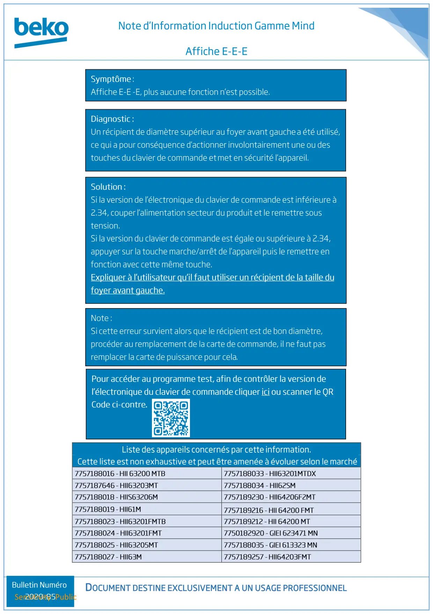

Note technique Cuisson Mind Affiche E E

Note d’Information Induction Gamme MindAffiche E-E-EDOCUMENT DESTINE EXCLUSIVEMENT A UN USAGE PROFESSIONNELSensitivity: Public
1 / 1


Gros électroménager
Ressources techniques SAV — Beko · Grundig · Whirlpool · Hotpoint · Indesit.
